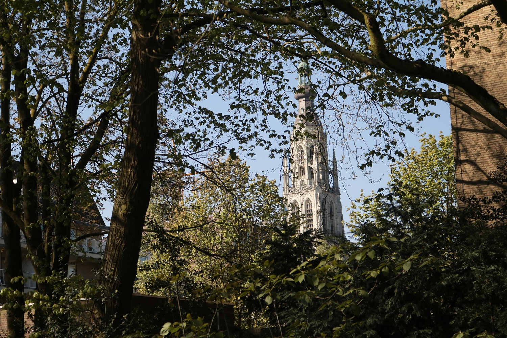
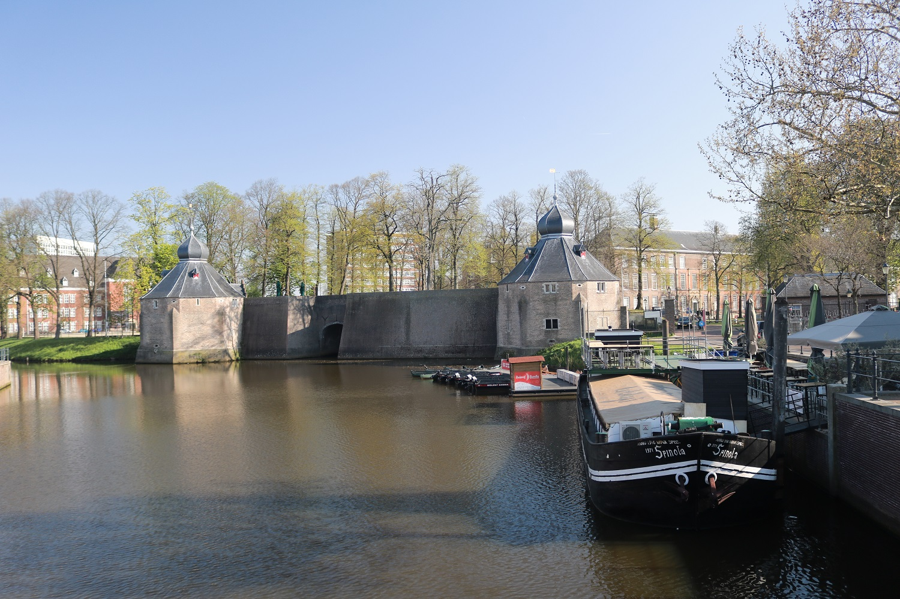
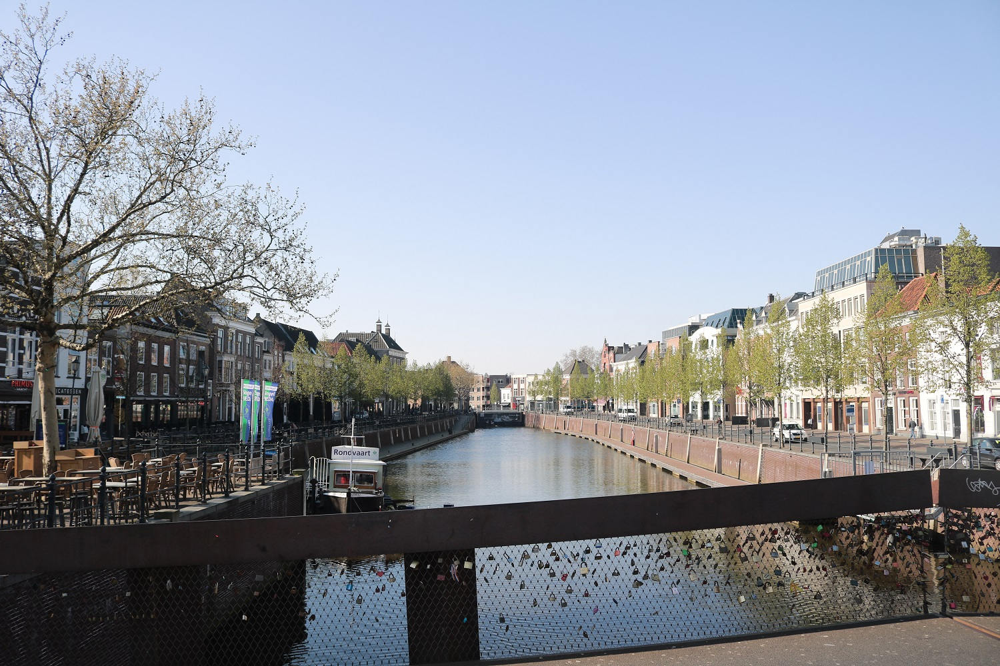

Breda biedt meer
Breda is een bruisende stad vol historie en met prachtige natuur De plekken die je gezien moét hebben, vind je hier.
Het Begijnhof

Breda heeft al sinds de dertiende eeuw een Begijnhof dat wordt bewoond door alleenstaande vrouwen. Het is een door muren omringd complex, te vinden bij het Valkenberg Park, dat bestaant uit 29 huisjes en een kleine kerk. De huisjes zijn verdeeld over twee hofjes rondom een kruidentuin.
Het Valkenberg Park

Het Valkenberg Park verbindt het centrum van Breda met het Centraal Station. Het is de voormalige hoftuin van Koning Willem I en nu een populaire plaats zodra de zon schijnt.
De Grote Kerk
De Grote of Onze-Lieve-Vrouwekerk is het belangrijkste monument van Breda. De Prinsenkapel is het mausoleum van de vroege voorvaderen van de Nederlandse koninklijke familie, het geslacht van Nassau-Dillenburg.
Breda heeft een unieke Spaanse geschiedenis. In de 80-jarige oorlog zetten de Brabanders de bezetters te kijk met een slimme truc.
Het Spanjaardsgat
Het Spanjaardsgat is een waterpoort die ligt tussen de Granaattoren en de Duiventoren van het Kasteel van Breda in het centrum van Breda.
De list
Het Spanjaardsgat symboliseert voor velen de toegang tot het kasteelterrein waar in 1590 Staatse soldaten begonnen met de verovering van Breda op een Italiaans garnizoen onder Spaans bevel.
De Staatse soldaten verborgen zich onder een stapel turf in een turfschip, een oud idee van Willem van Oranje. Het Spanjaardsgat werd echter pas 20 jaar na voornoemde gebeurtenis gebouwd.